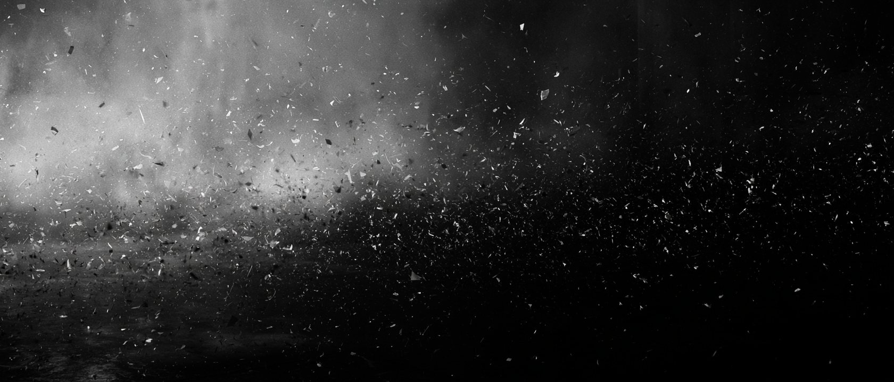
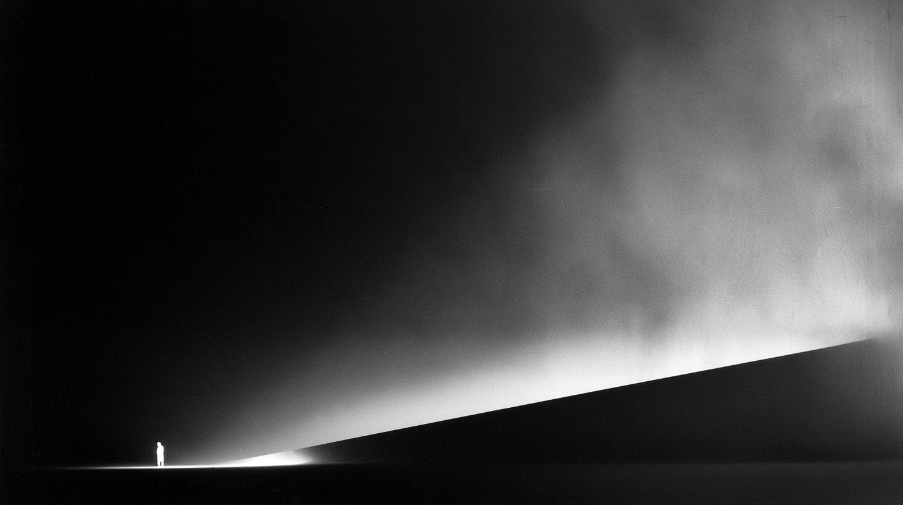

Akt první co jste odložili

Co z toho plyne
To, co jste odložili, nezmizelo. Působí to dál v naučených vzorcích, v automatických reakcích a v přesvědčeních o tom, kdo jste a co si můžete dovolit.
Tyhle vzorce zareagují dřív, než si jejich vlivu stačíte všimnout. Část toho, čemu říkáte vlastní volba, je zvyk, který jste nikdy vědomě nezvolili.
Nezahodili jste to ze slabosti. Přizpůsobili jste se, protože jste jako děti záviseli na tom, aby vás dospělí přijali.
Devadesát procent není měření. Je to obraz Roberta Blyho.
Akt druhý co je ve tmě
Nalezeno 0 z 5
Nevědomí není zlé. Je jen neosvětlené.
Zrcadlo první polovina
Vyberte tři. Ne to, co je špatné obecně, ale to, co ve vás zvedne víc, než by situace zasloužila. Ten druhý se možná chová přesně tak, jak si myslíte. Síla vaší reakce ale nemluví jen o něm.
Zrcadlo druhá polovina
Zase tři, a tentokrát ty, u kterých vás obdiv trochu píchne.
Zrcadlo obojí
Co jste odložili, protože to nebylo přijatelné
Co jste odložili, protože jste uvěřili, že to k vám nemá patřit
Ten člověk možná skutečně jedná tak, jak si myslíte. Síla vaší reakce však nemluví jen o něm.
Temné i zlaté. Obojí leží na stejném místě.
Nic z toho si tahle stránka nepamatuje a nikam to neposílá. Zapamatovat si to musíte sami.
Co se tím změní
Dnes reagujete okamžitě a až potom přemýšlíte proč. Touhle prací se mezi podnětem a reakcí postupně otevírá prostor, ve kterém se dá rozhodnout.
Začnete své vzorce rozpoznávat dřív, než zcela převezmou řízení. Uvidíte, kdy se vám vrací stará situace v novém obalu, a nemusíte v ní hrát stejnou roli jako vždycky.
Ve vztazích začnete dřív rozpoznávat, co ten druhý opravdu udělal a co jste si k tomu přidali sami. Hádek o nedorozumění bývá pak méně.
Přestane vás stát tolik sil držet se zpátky. To, co jste roky potlačovali, se dá použít. Vztek jako hranice, citlivost jako blízkost, tvrdohlavost jako vytrvalost.
A dostanete se ke schopnostem, o kterých jste uvěřili, že k vám nepatří. Většinou je to právě to, co roky obdivujete na druhých.
Nic z toho nepřijde samo. Změnit se dá jen to, co nejdřív uvidíte a pojmenujete.
Proč to nestačí
Tahle stránka vám mohla ukázat stopu. Nemůže vám ale ukázat to, co jste se celý život učili nevidět.
Stín není nedostatek informací. Je to slepé místo vašeho vlastního pohledu. Proto se nedá vyřešit dalším článkem, dalším videem ani hodinou přemýšlení o sobě. Když se na sebe díváte pořád stejným pohledem, snadno znovu dojdete k tomu, co jste si mysleli už předtím.
Potřebujete čas, pravidelnou praxi, zpětnou vazbu a druhé lidi, kteří vám ukážou to, co byste znovu přehlédli.
Proto Práce se stínem trvá šest měsíců, probíhá živě a nevedu ji jako sérii přednášek.
Co říkají lidé, kteří tím prošli
„Učení Carla Junga je samo o sobě dost složité a číst jeho knihy bez vedení je docela boj, ale tady je to podané přehledně a srozumitelně. Není to jen teorie, člověk si během toho reálně sahá do sebe a začíná chápat svoje vzorce."
Jiří Buček
„Po Integrální cestě jsem si myslela, že už o sobě leccos vím, ale Práce se stínem mě vyvedla z omylu. Pojmenovala jsem si svůj vzorec kontroly a znovu se učím spontánní radosti a lehkosti, která mi tak chyběla."
Alexandra Micková
„Hodně těžké pro mě je připustit si, že některé věci si nesu z dětství, protože mám skvělé rodiče a celé dětství bych popsala jako šťastné. A zároveň cítím, že jak některé věci odkrývám a léčím, uvolňuje se mi s tím i tělo."
Jitka Bokrová
Práce se stínem
Uvědomění samo o sobě ještě není změna. Je to ale okamžik, kdy se poprvé objeví možnost volby.
Vaše vlastní slova z poloviny této stránky
Přesně s tímhle materiálem se v kurzu pracuje. Ne s příklady z knihy, ale s tím, co jste právě pojmenovali sami.
Vaše cesta k větší svobodě začíná v říjnu.
Prohlédnout celý kurzDvanáct živých online setkání během šesti měsíců
jednou za čtrnáct dní záznamy a pracovní materiály zůstávají
začátek v říjnu 2026 15 900 Kč, nebo 6 × 3 000 Kč
Kurz je vzdělávací a sebezkušenostní. Nenahrazuje psychoterapii ani psychiatrickou péči.
Další čtení
Proč PAULUS existuje, kdo za ním stojí a u koho jsme studovali.